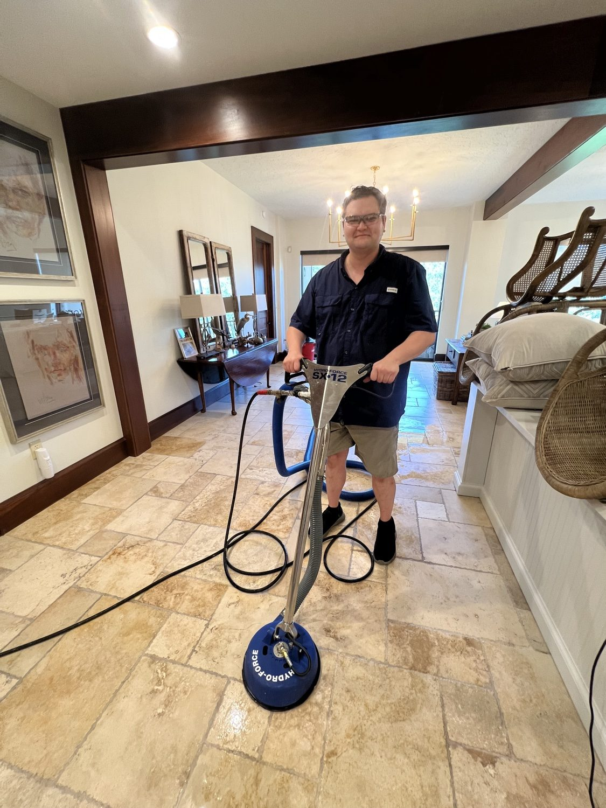

From the blog
Interior Home Cleaning in Mobile, AL: What a Standard Clean Covers
November 2, 2026

Most of our work is outside the house, but the inside matters just as much, especially in November. Holiday guests are coming, the kids are tracking in leaves and red dirt, and Mobile humidity keeps every surface feeling a little damp. A standard interior cleaning resets the whole house at once, and it is a lot more than a quick tidy.
Here is what a standard clean from Kinney Cleaning Services covers, how the pricing works, and how to get the most out of the visit.
What a standard clean covers
- Kitchens. Counters wiped down, sinks cleaned, appliance exteriors wiped, cabinet fronts spot cleaned, and floors swept and mopped.
- Bathrooms. Toilets, tubs, and showers scrubbed, sinks and mirrors cleaned, counters wiped, and floors mopped.
- Bedrooms. Surfaces dusted, mirrors wiped, floors vacuumed or mopped, and beds made if linens are left out.
- Living areas. Dusting, vacuuming or mopping, straightening cushions, and wiping light switches and reachable fixtures.
- Throughout the home. Trash emptied, cobwebs removed from corners and ceilings within reach, and doors and handles wiped.
A standard clean is a thorough maintenance clean, not a deep clean or a move out clean. If your home needs baseboards scrubbed, blinds washed, or inside oven and fridge detailing, ask about that when you book so we can plan the extra time.
How pricing works
Interior cleaning is priced by home size and room count: $0.12 per square foot, plus $15 per bedroom, plus $25 per bathroom, plus $10 per living area, with a $149 minimum. As an example, a 1,500 square foot home with 3 bedrooms, 2 bathrooms, and 2 living areas runs $295. Homes over 3,000 square feet get a custom quote. Bundle 3 or more services and save 10 percent, and veterans save 10 percent with ID verified at the job. Only one discount applies per order, and we always give you the best one that fits.
That formula is why the quote form asks for square footage and room counts. It keeps the price tied to the actual size of the job instead of a flat guess that is wrong for half the homes in town.
How often to book
For busy households around Theodore, Grand Bay, Irvington, and West Mobile, a standard clean every two weeks keeps the house in good shape without a big buildup between visits. Monthly works for smaller households or homes without pets. A one time clean before the holidays or before guests arrive is also popular this time of year, and many one time customers come back on a regular schedule once they see the difference.
Mobile humidity is a real factor indoors too. Bathrooms and kitchens grow mildew faster here than in drier climates, so regular cleaning of those rooms is not just cosmetic. It keeps grout and fixtures in better shape over time.
Getting ready for the crew
- Pick up clutter first. The crew cleans surfaces, they do not organize closets. Clearing counters and floors lets them spend the time cleaning.
- Secure pets. Let us know about pets when you book so we can plan around them.
- Point out priorities. If the guest bathroom matters most this week, say so. We will start there.
- Leave out fresh linens. If you want beds made with clean sheets, leave them on the bed.
Pairing an interior clean with an exterior job in the same visit is an easy way to get the whole property ready at once. House wash outside, standard clean inside, and the home is guest ready from the street to the living room.
House due for a reset before the holidays? We can help.
Kinney Cleaning Services does standard interior cleaning across Mobile County. Veteran owned and operated.
Call (251) 767-0754 Get a Custom Quote